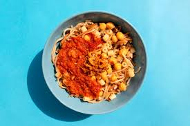

My favirout food in Egypt
koshari
A hearty vegetarian dish made from a base of lentils and short-grain rice, topped with pasta (often elbow macaroni or fusilli) and finished with a spicy tomato sauce. It’s traditionally garnished with crispy fried onions and often served with a side of chickpeas and a tangy المصري (garlic-vinegar) sauce or hot sauce. Culinary origins Considered Egypt’s national dish by many locals, though there isn’t an official designation. Emerged in Cairo in the mid-20th century as a affordable, filling meal for workers and students. Typical components Base: brown or green lentils and rice. Carbohydrate layer: pasta. Sauce: a robust tomato sauce simmered with garlic and spices (often including cumin and coriander). Toppings: crispy fried onions, with optional chickpeas, paprika, and chili pepper. Sauces on the side: a garlic-vinegar sauce (or lemony sauce) and sometimes a hot sauce. Preparation and assembly The dish is usually prepared in large pans, then layered or mixed just before serving. Onions are thinly sliced, fried until crisp, and drained to keep them crunchy. The layering method helps the dish stay warm and allows diners to mix to their preference. Variations Some places add a little tomato sauce directly to the mix, while others serve sauces on the side. In some regions, other ingredients like fried chickpeas, baza (pasta) shapes, or spicy pepper toppings are included. Cultural significance A staple of Egyptian urban life, especially in Cairo’s street food scene. Known for being affordable, hearty, and satisfying, making it a comfort food for many Egyptians. Serving and eating Commonly sold at street stalls and casual eateries. Typically eaten with a spoon and a fork, or sometimes with just a fork in casual settings. Nutritional profile Rich in carbohydrates and plant-based protein from lentils and beans. High in fiber and often quite filling; can be relatively high in sodium depending on sauces and toppings. If you want, I can tailor these facts to another angle (history, regional variations, how to make it at home, or where to find authentic Koshari).
Molokhia
A green, leafy dish made from finely chopped molokhia leaves (Corchorus olitorius or similar varieties) cooked into a thick, mucilaginous soup. Typically served over or with rice or bread (such as flatbread or نسك) and often accompanied by meat.
.jpg)